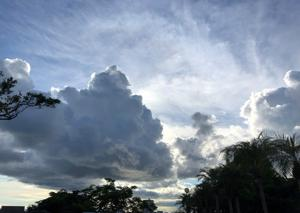
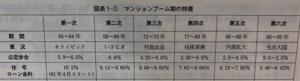

うるがいの話 ある日
最新: 住宅ローン金利【うるがいの話 ある日】とは 一日だけのプログです
『うるがいの話』の最新一日だけのプログで、通信料が少なく経済的だ。カニの画像をクリックすると全ての日付が載る『うるがいの話』サイトを表示します
|
|
【うるがいの話】 うるがい(ｳﾙｶﾞｲ urugai)とは、『もずくがに』の名前でとても大きくなります。 |
|---|---|
|
|
【カミマヤーの話】 猫のことを方言でマヤーといいます。カミマヤー（kamimayaa）とは、神の猫のことです。 |
|
【たながぁの音楽】 たながぁ（ﾀﾅｶﾞｰ tanagaa）とは手長えびのことで、何種類かあり大きいのは車 エビぐらいになります。 |

|
【ぶながぁの話】 ぶながぁ(ﾌﾞﾅｶﾞｰ bunagaa)とは、赤い髪の毛、赤い身体、そして身長は１ｍ２０ｃｍ ぐらい、川の蟹を食べているの目撃された。場所は沖縄県国頭郡大宜味村のと ある村僕の隣近所に住んでいる爺さんから、聞いた話です。 |
|
|
【ギーマの話】 ギーマ(giima)とは、山原の里山に咲くスズランに似た、 花を付けます。実は食べられます、 気が付くと口の周りが紫になっています。 |
2022年08月14日 (日）住宅ローン金利
16:42

小菊豊久のマンションは大丈夫か―住居として資産として (文春新書)を読ん
でいたら、住宅ローン金利の推移表があった。なんと、１０％の時代があった
のを知る。私が、新築住宅の借りれたときの１９９４年の複数の貸付金利は（
固定金利３．８％～４．８６％）、そして金利が下がった２００３年に借換し
た２００３年は変動金利１．９７５％、そしてネットで調べたみずほ銀行の固
定金利は１．２６０％、変動金利では０．３７５％である。ちなみに琉球銀行
の普通預金金利、定期預金利息は０．００１％、単純に１千万預けると１００
円（実際はこれより少ない）になる。こんな金利だから、仮想通貨などに投資
してみようと考える。そして、既に元本を５割以下になってしまっている。暑
い暑い毎日が暑い、なにか気候が壊れている・・・。。

１６時３６分 ビットコインの総資産 ￥９、６４１↑